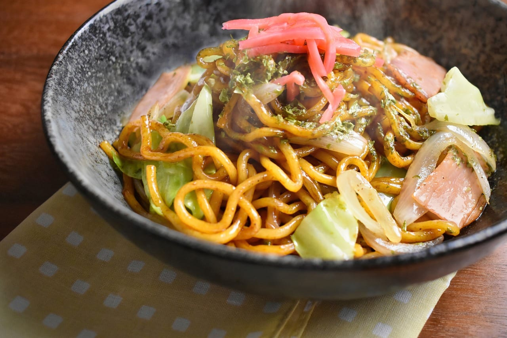

O yakisoba é um prato popular da culinária japonesa que consiste em macarrão refogado com uma variedade de legumes, carnes como frango, carne bovina ou porco, e um molho especial à base de soja e molho de ostra. Com sua combinação de texturas e sabores, o yakisoba é um prato versátil e saboroso, ideal tanto para uma refeição rápida durante a semana quanto para ocasiões especiais. Tradicionalmente, é finalizado com gengibre em conserva e flocos de alga nori, adicionando um toque extra de sabor e autenticidade.